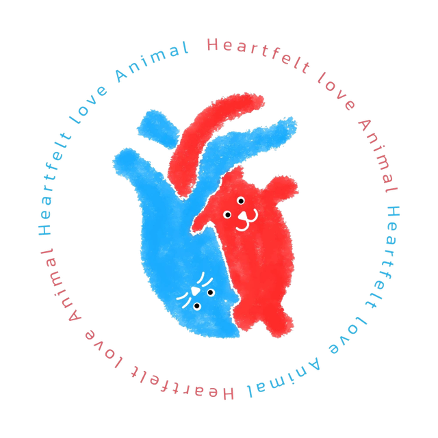

獸醫讀書筆記
Heartfelt love
Animal
Veterinary Study Notes
🔍
🏥 科別
11
筆記數量
2026
更新年份
🐕🐱
犬貓小動物
📚 我的筆記
🩸
輸血醫學與休克復甦
體液生理、氧氣輸送、輸液策略、血製品選擇、血型配對、輸血反應
🏥
住院伴侶動物護理與監控技術
獸醫護理流程、生命徵象監測、輸液治療、輸血療法、呼吸急救、RER計算
🔬
小動物臨床病理
細胞學、血液抹片、尿液分析、腎臟生物標記、蛋白尿評估、CKD/AKI、腎臟切片
🐱
2026 AAHA 貓咪糖尿病管理指南
病理機轉、診斷、SGLT2抑制劑與胰島素治療、飲食管理、緩解、監測方式、糖尿病酮酸血症處置
🫀
心臟超音波系列（ESAVS）
機器與探頭操作、標準切面、M-Mode/LA/RV 測量、都卜勒與舒張功能、常見病理判讀，依原始講義拆成 18 個小節，附多個互動計算機
📝
內科 SOAP 病例紀錄標準寫法
美國教學醫院內科 SOAP 模板：主觀／客觀資料清單、理學檢查範例、Problem List 三步驟與鑑別診斷排序、診斷／治療計畫與飼主溝通，附完整病例範例
🧪
2026 Texas 內分泌研討會
VET-KU × Texas A&M 內科研討會課堂筆記：PU/PD 診斷流程、USG 判讀、DDAVP 試驗、中樞性尿崩症，整合講義與錄音，陸續更新
🚑
2026 TSFM 貓急重症研討會
Elise Boller（DACVECC）兩天貓急重症課程：休克、復甦輸液、呼吸窘迫、FATE、ITP 與輸血、CPR、敗血症、DKA、AKI，依講義整理
🚻
Jody Lulich 泌尿講座
Minnesota Urolith Center 三場講座：貓尿道阻塞、貓腎與輸尿管結石、亞洲犬貓尿結石資料（含台灣），依講義整理
🎗️
Rita Ho 腫瘤科講座
血管肉瘤、絕育與腫瘤風險、電化療、皮膚副腫瘤症狀四場繼續教育，依投影片與講義整理
🦷
牙科麻醉與止痛
無麻醉洗牙風險、術前評估、插管、神經阻斷、多模式鎮痛
＋
新增筆記
🔊 超音波專區
🔊
超音波專區
腹部與心臟超音波的正常值、判讀重點與陷阱；第一篇：貓膽道系統（JFMS 2019 回顧論文）
🩺 專欄
🩺
梅醫師病例討論
以真實課堂病例整理的臨床討論專欄：病史、檢驗判讀、鑑別診斷與治療邏輯，陸續更新
🧫
知菌知藥：抗菌藥物選擇
MIC／breakpoint 判讀、SODAPOP 決策架構、泌尿道感染與肺炎的選藥與療程，三部曲陸續更新
📋 行政管理
📋
新訓目錄
醫師報告與講評紀錄總表（僅限有權限的帳號登入查看）
📌 把新的
.html
筆記檔放進
notes/
資料夾，再在 index.html 新增一張卡片即可。